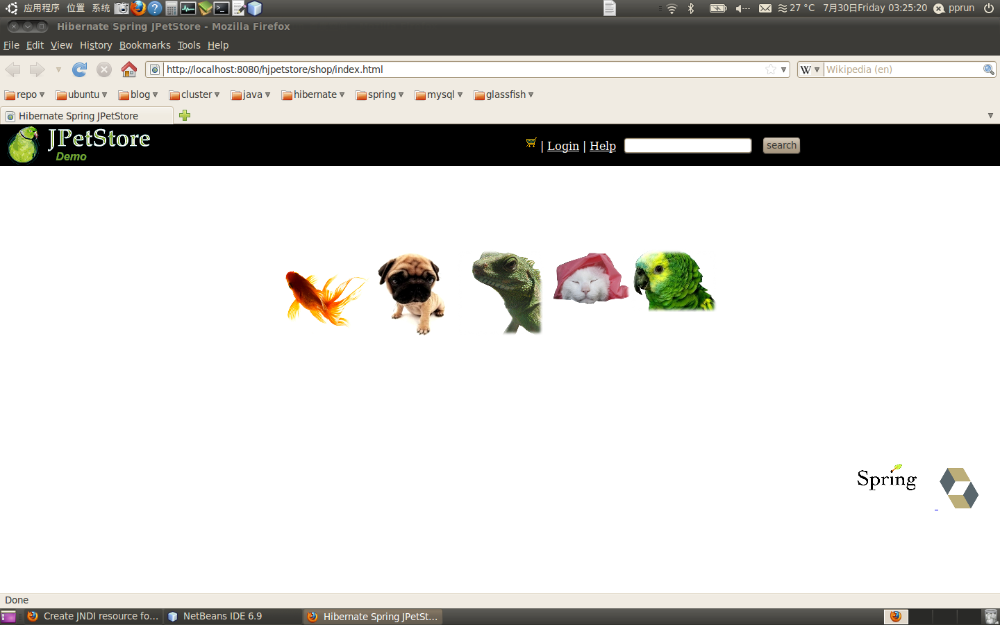
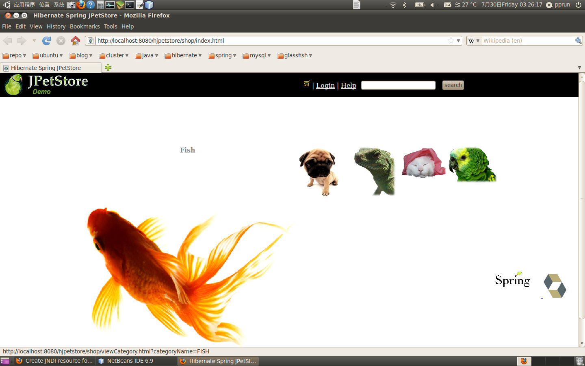
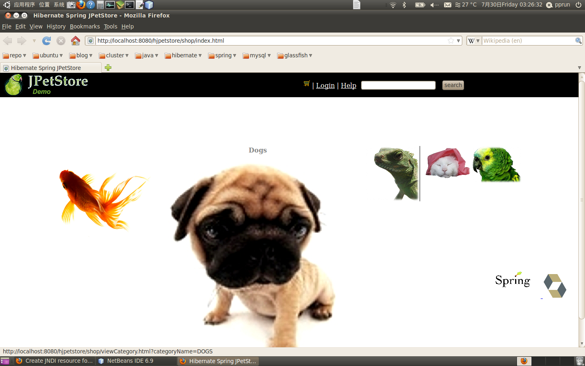
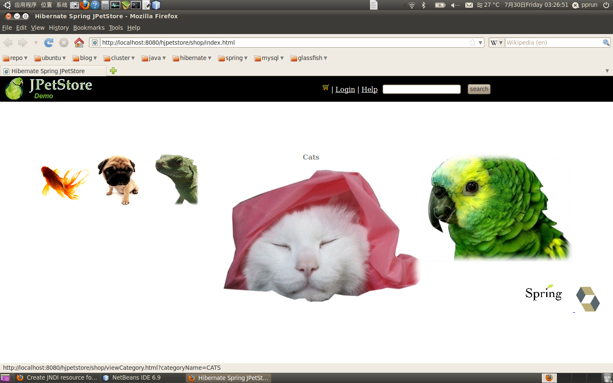
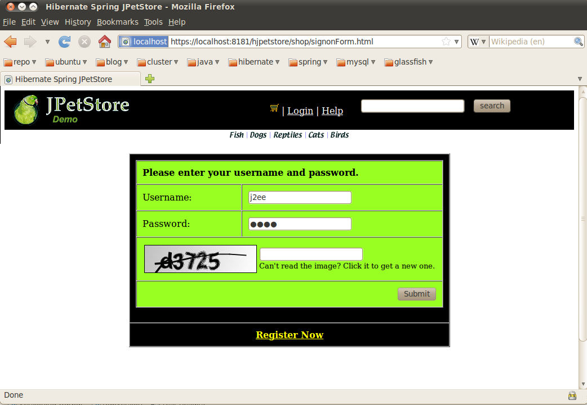
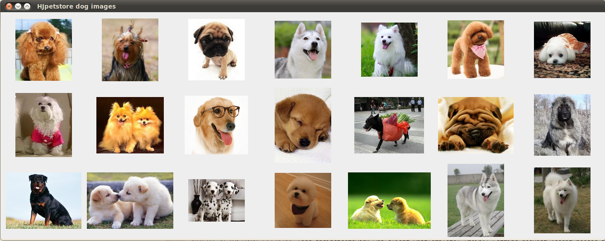

Description
Design Document:
Open Office
PDF
MS Word
HTML (might not correct display due to charset issue)
The following technologies are being used in the current implementation:
Check out the source code
build and deploy
The deprecated hjpetstore v1 (elementary combined with Hibernate, Spring, Strut1) is
still available and if you are Chinese, a thoroughly introduction can be found in the chapter 17 of book
零基础学Java Web开发 (刘聪).
The following are the screenshots for hjpetstore 2.0

Requriements
DataBase
Java EE (J2EE) server / Servlet Container
Depends on JTA datasource that would be the JNDI resource set up in GlassFish, this is the requirement of Jboss Transaction cache.
Documentation
All configuration documentation will be composed and put on my blog, which will cover:
Architecture design
- load balance in Web layer
- cluster and failover in Database and Application Server
- ERD
- security
- transaction model and strategy, including discussion of business transaction (long term transaction)
Implementation detail
- Hibernate mapping trick and performance consideration
- JMS loose-coupling Integration
- Spring MVC 3 Restful
- Spring security 3
- Jboss second level cache
- Spring RestTemplate (the Restful client)
Run Instructions
Setup before run
- Download NetBeans with GlassFish and install, if you still have not
- Download Mysql and install, if you still have not
- Mysql intializaton,
see ${hjpetstore2.0}/src/main/resources/conf/db/mysql/mysql_readme.txt
see mysql_readme.txt
- install maven, if you still have not
Several artifacts missed in community maven repository, we need to import them into your local repository,
see maven-readme.txt
Glassfish configurations
- JGroup ip v6 issue: （only linux) change glassfish to disable ipv6, otherwise jgroup will be failed.
start up glassfish admin console if still not
JVM setting -> JVM options -> add JVM option： -Djava.net.preferIPv4Stack=true
- Mysql connectorJ
Download Connector/J, the MySQL JDBC driver (e.g., Connector/J 5.1.x), which can be found here: http://dev.mysql.com/downloads/connector/j/
added mysql-connector-java-xxx.jar into glassfish-3.0.1/glassfish/lib for datasource setup
- Create XA datasource 'jdbc/hjpetstore',
see Create JNDI resource for hjpetstore 2.0
- Create JMS resource,
see Create JNDI resource for hjpetstore 2.0
- Launch the project
(assume you downloaded the hjpetstore 2.0)
In Netbeans, right click the project -> run
Screenshoots
Fish eye



Kaptcha

Spring MVC 3 RestTemplate Client
which requests a RESTful controller SearchProducts of Hjpetstore2 and
uses Xpath parse the xml response and then send another Rest request
to pull all image which url contained in the previous response,
then use org.springframework.http.converter.BufferedImageHttpMessageConverter
to return a list of BufferedImage for rending in Swing Component:
